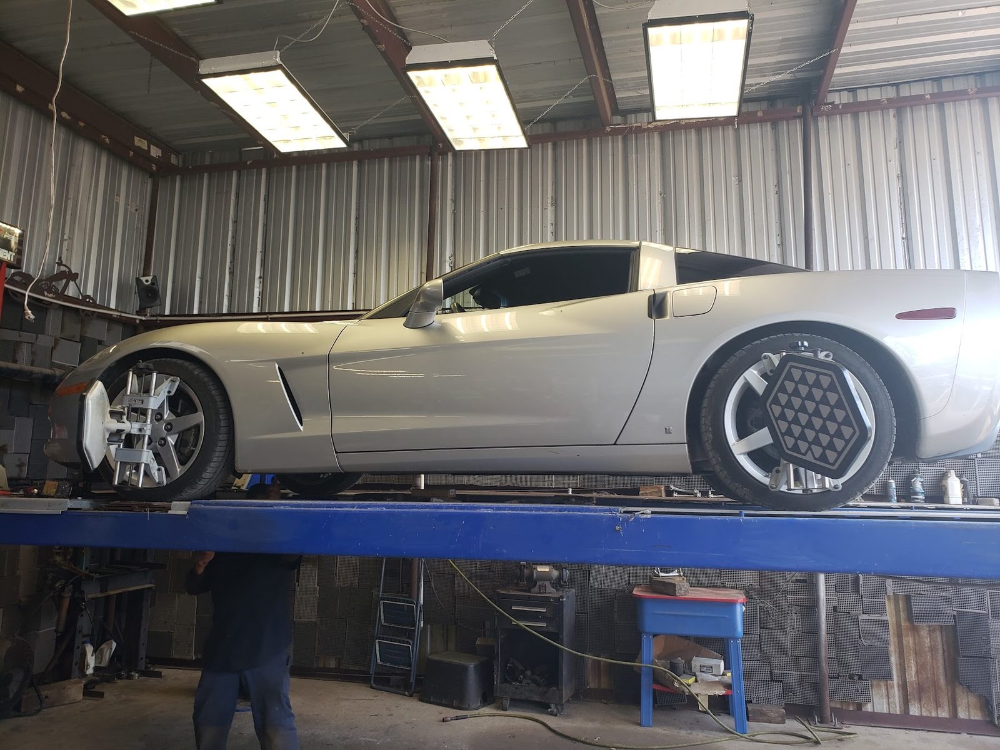

Bay 1
Wheel alignment
Most alignments take under an hour on the lift. Book a time and often be done the same day.
- Alignments
- By appointment
- Clear explanation
Wheel alignments · Cedar Creek, TX
Pete Sr and Pete Jr set your wheels straight, usually in under an hour.

Father and son shop
Alignments for trucks, cars and classics.
Most alignments take under an hour on the lift. Book a time and often be done the same day.
Pete's knows suspension geometry far better than a quick lube shop. Odd tire wear is a good reason to come in.
Trucks that veer, classics that need dialing in. Rams, Denalis and older cars all go on the lift.


Drivers say
4.8141 Google reviewsI don’t often leave reviews. However my experience at Alignments by Pete was 10/10. It’s rare to find honest shops now days. Instead of telling me to spend money on unnecessary parts and services, they saved me money and were honest about not needing to buy a part I thought needed to be replaced. I made an appointment and they took care of my alignment that same day. Turnaround time was great and fast.
The Pete’s got me taken care of. These guys specialize in alignments and understand suspension geometry far more than a regular quick lube shop ever could. Excellent work and great guys. I enjoyed chopping it up with Pete Sr and Pete Jr while they worked on my vehicle. Places like this are hard to find in 2026.
Just had an alignment here. My truck would veer to the left if I let the steering wheel go. My tires showed signs of a much needed alignment. Took less than an hour. On my drive home, I was so pleased with the ride. Great price and VERY good customer service. Highly recommend this shop. Thanks Pete and Pete!
Highly recommend Alignments By Pete! We try to support local businesses whenever possible, and we’re so glad we found Pete and his son. They were super friendly, professional, and got our alignment done in under an hour. Great service and honest local guys, we’ll definitely be back! 🚗🔧 …
A father and son shop. Pete Sr and Pete Jr do the work and keep the talk easy.
Alignments and suspension geometry are our focus. If you don't need a part, we'll say so and save you money.
A working shop: a Hunter lift, wheel sensors on the tires, and trucks, sports cars and classics waiting their turn.

Find us
116 Blue Oaks Dr, Cedar Creek, TX 78612
Blue Oaks Drive, Cedar Creek. Monday to Friday, 9 AM to 5 PM. Closed weekends.